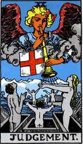

塔罗牌审判档案
牌 名：审判Judgement
含义：更新、觉醒。
对应人物：Hermes the Psychopomp
对应占星：天蝎座
相关词：召唤、解放、再生、因果
四元素：水元素
加强牌：倒吊人、星星、审判、权杖三
每月20日--审判。塔罗牌大阿卡那的第20张是“审判”。这张牌鼓励当事者抛开物质上的束缚，寻求更高境界的灵性生活。牌面的图案是吹着号角的天，象征负有重任的崭新的一天。这张牌正立时具有超越自我、发掘无穷潜力的正面特质。倒立时则引喻号角声多半报喜不报忧，容易沉溺在欢乐的追逐中，并且缺少面对忧伤的能力
优点：复活的喜悦、康复、坦白、好消息、好运气、初露锋芒、复苏的爱、重逢、爱的奇迹。
缺点：一蹶不振、幻灭、隐瞒、坏消息、无法决定、缺少目标、没有进展、消除、恋恋不舍。
相关传说：他也是亡灵的指引者。
塔罗牌审判牌面故事
天使吹着有旗子的喇叭传播福音，唤醒沉睡在底下的灵魂。告诫人们远离迷惑，怀抱感恩的心，倾听福音。这张牌在78张塔罗牌中是本质最恒定的，至少，牌的特征和本性不会改变。死者从他们的坟墓中爬了出来，右边是女人，左边是男人，中间是他们的孩子，背对着我们。但这张牌面上的复活者不止三个。需要注意的是，他们全部对大天使表现出一种惊喜、崇拜和敬畏的情绪。
塔罗牌审判牌面解释
牌面上描绘的是天使吹起号角，让听到这音乐的死者得到救赎。天使的号角可以唤醒所有人的情感，即使是忏悔过的罪人也有到达天堂的希望。天使的号音象征着旧观念已经死亡，人们正在音乐的召唤下拥抱新世界。解牌时要注意决断和复原。
你也在总结整理过去的经验，丢弃错误留下宝贵的知识。在新世界的开始，你将发现你自己并不是孤独的，有很多朋友和你一起学习，尽管你们素昧平生，但圣堂天使让你们彼此互助，这使你们的生活更加愉快。
塔罗牌审判牌义解释
这张牌告诉我们，要发现真相，接受新的价值观，如此一来才能拥有新的人生。
牌的正位置一般预示着在这个新世界的起头路程上，你将开始学习了解自己并不是孤独的，有很多优秀的朋友跟你一起学习。虽然你们彼此并不认识，但是圣堂天使让你们彼此相互帮助。这样的方式让你们在新世界里活得更愉快。在你们目前的关系中，包含了过去所播下的种子与努力过的一切。这一段时间是你们从错误中找到正确的彼此相爱的方式。过去的努力造就了你现在的成就。你已经在品尝着这甜美的果实了。但是还是会有一些果实是不好的，苦的，你要从中挑出来丢弃，并且找到问题。
塔罗牌审判解牌参考
正位
1.归还了所有的债务，重新开始。
2.赎罪的时刻到来。
3.复苏的爱情。
4.接受别人给予的惩戒或者意见。
5.知道了自己的错误并且开始悔改。
6.已经毫无希望的事情出现了转机。
7.对自己有个明确的看法。
逆位
1.决定迟迟无法作出，事情被延迟耽搁。
2.噩耗传来。
3.无法挽回的爱情。
4.受到了阻碍。
5.无法挽回的损失。
6.彻底地失败。
7.长时间地无法恢复。
塔罗牌审判正位释义
（1）工作学业：有复职的可能、事业脱离窘境、岗位变更、升迁、适合与音乐相关的工作、考试非常的顺利、学业更上一层楼、临阵磨枪不快也光、成绩优异。
（2）基本含义：复活的喜悦、命运不断地好转、有作品公开发表、得到好消息、信奉宗教、非常的自信。
（3）其他：旅游可以放松最近疲惫的身心、音乐可以减轻疲劳、退一步海阔天空。
（4）恋爱婚姻：真心的恋情、感情公开、即使发生争执还是有和好的希望、爱的使者出现、破镜重圆、深信会有爱的奇迹。
（5）健康生活：借旅行净化身心、借音乐舒缓心情、休养生息。
（6）人际财富：财物失而复得、获得意外之财，友情的裂痕得以修复、备受他人赞许、与多年老友取得联系、与旧友言归于好、与他人建立彼此信赖的关系。
（7）复活的喜悦、康复、坦白、好消息、好运气、初露锋芒、复苏的爱、重逢、爱的奇迹
（8）当牌面正立时，事业上你超越了自我，在过去努力的基础上取得了成功。感情上双方都在认真学习和成长，虽然表面上的变化并不大，但内在的改变已经很大了。
塔罗牌审判逆位释义
（1）工作学业：求知遇阻、事业受到挫折、面对困难一蹶不振、颇感心有余而力不足、业绩低迷、考场受挫、对考试期望太高、难以考人所期望的学校。
（2）健康生活：积劳成疾、病情延误。
（3）人际财富：丢失财物、遗失重要的物品、夹在朋友之间十分的为难、与旧友无法和好、对朋友感到特别的失望、过去被好友背叛致使心里留下阴影、时常会认错人。
（4）基本含义：一蹶不振、尚未开始就已结束、犹豫不决、行为不妥、生活特别散漫、因良心发现而内心有种罪恶感。
（5）恋爱婚姻：嫉妒心比较重、辜负对方的好意、无法向对方展开心扉、没有办法破镜重圆、对待恋情不够认真、旧情难以忘怀。
（6）其他：重返故乡、因贪玩而导致身心疲惫、生活没有规律。
（7）一蹶不振、幻灭、隐瞒、坏消息、无法决定、缺少目标、没有进展、消除、恋恋不舍
（8）当牌面倒立时，在事业上缺乏清晰的判断，试图用物质填充精神的空虚。在感情上，不断地回忆着过去的美好时光，不愿意去正视目前的问题，你们的关系已经是貌合神离了。
倒立的审判
当审判倒立时，你会发对来自内心的呼唤。也许你的理智和逻辑正在劝你，不要为某不明确或看不见的东西而放弃“你所拥有的一切”。每一次你拒绝或延迟回应这呼唤时，空虚感就会再一次加深。你收成的时候已经到来，你必须为你先前的决定负责，作为生命中某个章节的结束。
通常当审判倒立出现时，代表你正在找寻某些东西，以填补命中越来越大的鸿沟。你并不知道这个召唤是来自内心，也不知道解决知道也来自内心。简单说，这张牌碍是缺乏清晰的判断力。
英格丽来我这里，希望能治愈她那让群医束手无策的疾病。她已七十四岁，穿着非常得体。这是一个将人生以及自己掌握得非常好的女人。她花了四十分钟的时间向我介绍她自己，而且对自己及其成就是完全的歌功颂德。对我而言，那四十分钟简直令人精疲力竭，因为她似乎认为这世界是为她而运作、为她而停止的，再也没有比英格丽更重要的事物了。我感觉心里升起一股愤怒——怎么可以有人活到七十四岁，却还是完全的自私呢？完全没有智慧，只有贪婪和权力的滥用，而这完全是为了控制他人。
“你知道，我从前是个非常漂亮的女人。我曾经是个活跃在伸展台上的模特儿，结识了许多欧洲最棒的男人，他们当中有些人已经结婚了。我和一位相当英俊的男士定过婚，但在我和零一个男人上过床以后，我便解除了婚约。毕竟如果我可以那么轻易背叛他，那我就不曾针的爱过他。”
我发现自己正在想着，她从没爱过，只爱对着镜子顾影自怜。我了解她的处境又多么可悲，它有多么的寂寞。她已经七十四岁了，却似乎从没有向生命或任何人，或单纯的孩子般的冲动屈服过。当我在说话时，她甚至听不见我的话，因为我所说的任何话，只会让她想到一些她觉得必须要再说的话。
她是不可救药的。也就是说，只有从她的内心才可能就得了她。她的精神饥渴，然而却无法从生命、宇宙或她身边的人中得到任何的支持。她希望我帮她除去身体上的症状，而我却没有办法是她了解，那些就只是症状而已。症状是有病因的，如果没有病因而加以治疗的话，新的症状还会出现。
通常在审判倒立时，你可能正在磕药、酗酒，或沉于肉欲，以填补内在的空虚。倾听你的心声，让它告诉你，你那永无止尽的悲伤，你不敢大声说出来的梦境，以及为了现实生活的要求而牺牲掉的希望。
罗那德三十岁，他觉得自己太年轻不可能有心脏方面的问题。我们在咨商课程中共事过几个月，在那段期间，我们发现了他心脏的问题，即藉着心脏的问题试着告诉他，他不想听的话。
他在童年时曾被一群男人施以严重的性虐待，在他们对他做出一些下流的行为之前，先毒昏他，让他进入无意识状态。
“我能确信不论他们对我做什么，我都有能力应付，但是我不知道他们做了什么。我会抗拒防毒面具好一阵子，直到我丧失意识，然后冰冷、孤独的醒来，全身湿淋淋的，显然刚刚被水冲过。这种事经常发生，而且回想起来我但愿死掉，这样就不必回到意识状态中了。”说到这里，他突然哭了起来。
“有几次我真的几乎要死了。他们一定是给我洗了太多瓦斯了，因为有一天我醒过来时，看到两个男人重压着我的胸部，而第三个男人在旁边嚷着该怎么做。当时我八岁。从那天开始我打心里痛恨我的心脏，因为它不让我死。”
我要他求去问他的心脏，对它的失望它有什么反应。我要求他倾听从他内心传出的低语。
他回答说：“它说当时它有问我是否想死，不过我的精神并没有出现在我的身体内，所以它就继续保持跳动，盼望着我的精神最终会回来，帮它作决定。在那种情况下，它只是做它觉得是最好的事情。”
由于感激他的心脏做了它觉得最好的事，罗那德开始能够填补一直跟着他的巨大空虚了。他开始为自己的发展负起责任，而审判牌又开始转会正立的姿态了。
塔罗牌审判大体上的意义
审判牌代表此时你有清晰的判断力。作为问题的答案，这牌暗示你拥有清晰的判断力。此时你理解了你由生命所展示的试炼及挑战中学习到了什么。
维多利亚来找我验证她所做的决定是否为明智的。她已有三个月的身孕，由于她不寻常的血型，医生已经警告她与生产期间可能会引起并发症。
医生建议她进行测试，包括取出胎儿的分泌物来测验他（她）的血型。一想到要用一根冰冷的针来干扰她孩子的自然生长过程，她便惊骇无比，所以她决定不做这项测试。
“我总觉得这孩子的血型会和我不同，而且医生也告诉我如果血型不同，那在生产过程就不会引起任何问题。”她解释道。
她想知道拒绝做这项测试是不是明智的。正立的审判牌证实了这是一个最恰当的决定，孩子的出生并没有带来任何并发症。
审判牌也可能是在形容你了解你的精神目的，也知道要达成它的必要步骤。它代表你能清楚地看到自己，以及生命的时光。这会使你对如何开始又有何收获，产生莫大的喜悦或惊慌。收成十分就近了，你可以用你的正直和诚实来面对你的报偿。现在你审判你自己，如果你没有得到所希望的，实在也没有藉口可推诿了，因为你收割的正是你努力的产物。
塔罗牌审判两性关系上的意义
1、审判牌暗示这个两性关系提供了重要的精神成长和学习。你目前的关系当中包含了因果循环的课题或回报，我再说一次，你现在所拥有的正式你过去所曾播下的种，或曾做过的努力的产物。
2、这段关系是过去所作所为的产物，而且它能激励你认识自己、你的模式或你生命的目的。检视你在这段关系中的收成，这么做的话，你就可以知道是哪些行为产生了这些结果。你目前所有的一切并非偶然。
3、审判出现时，表面上并没有什么明显的改变，然而表面下的改变却甚多。以一句中国古谚为例：
4、在顿悟之前，劈柴、挑水；
5、在顿悟之后，劈柴、挑水。
塔罗牌审判爱情
爱情正位
你和他发展到现在风风雨雨已经走过不少路了，似乎刚从一个大事件中走出来，刚解决一个感情中大问题的你们现在处于迅速升温的阶段。至少现阶段来讲，你们之间可谓是什么都很好了，照这样下去，你们距离最终结局也只差一步而已。对于你们的感情，你们双方并不是孤独的，天使也会给予你们一定的帮助，只要你们能坚持走下去，会有好结果的！
爱情逆位
你们的相处总是太随心所欲，不懂反思自我。导致你们在一起可谓是火药味十足，甚至经常闹的翻天覆地，或许你们在一起的时候就已经经常闹分手或者分分合合很多次了吧。其实你们直接确实是有爱情的，但这份爱太不成熟了，双方从来不自我反思和审视，导致双方的问题从来没得到解决，不断重复和伤害对方。
塔罗牌审判事业工作
事业正位
你所选的这份工作还是蛮不错的哦，虽然说不上拥有一帆风顺，但前景非常棒，即使偶尔出点问题，只要你注意凡是三思而后行，多审视工作状况，就没有什么问题是解决不了的。同时这份工作也是受到祝福的，任何问题只要你不放弃都不会是阻碍，甚至有可能会成为你的垫脚石。并且继续坚持最终会升职的概率很大哦。
事业逆位
你在工作中总是有些疏忽大意，其实这份工作还是蛮不错的，就是你的疏忽大意错过了很多次好机会。并且你在工作中需要注意反思，不断的反思中你能学到很多东西和信息，并且这也是你要想这份工作能升职加薪的一大方法。
塔罗牌审判学业
学业正位
你在学习方面正在或者将要遇到一个大的转折，你只要能够抓住和把握这次转折就能有突飞猛进的提高！本身你在学习上就已经算是非常有经验了，虽然过去在下降，但要恢复也只是很小的事情和问题而已，所以对你来讲只要稍加注意点，就行，机会是一定能够把握住的，而你的学习状况也是一定会有改善的！
学业逆位
对你来讲在学习上已经处于突破的临界点了，你也一直都非常努力，但非常让你纠结的是你总是无法真正的突破它。每次的成绩都是与你的目标有不大却无法过去的差距这让你非常心塞。对你来讲学习中需要多反思，不要急着向前冲或者急着要达成怎么样的目标，还是稳扎稳打边学边找出路会比较好。
塔罗牌审判在工作方面的启示
审判牌象征善报与恶报。
以图面看，这是基督教文化最浓厚的一张牌。天使长吹着喇叭，唤醒地上的生人和死者，迎接基督的到来。
而基督重临，审判开始。圣经上说：
“弃绝我不领受我话的人，有审判他的就是我所讲的道，在末日要审判他。”“但我告诉你们，当审判的日子，所多玛（按：被天火焚烧的城市）所受的，比你还容易受呢。”
“你竟任着你刚硬不悔改的心，为自己积蓄忿怒，以致神震怒，直到公义审判的日子来到。”字字铿锵有力，不容更改。
所谓宗教或现实社会的‘‘审判”，基本上就是这么一件“算总账”的事。
什么因导致什么果，这里面有太多学问可讲，每个人信奉的理论又不可能一样；但是，审判牌讲的是终究有一个“审判”会在我们的旅途中发生。
年轻人横冲直撞，壮年人精打细算，中年人瞻前顾后，老年人累积了足够的信心或胆怯、满意或遗憾，静待审判。
这审判可以是世俗的成败，更多的是道德与良知的自问。
所谓“永续经营”，所谓“取之社会、用之社会”，所谓“爱乡爱国”，所谓“远景和理想”——所有企业简介或公关文章里面讲的观念或口号，总有一个时刻会证实是真是假。
一如个人的情操风范，和外在言行举止是否相称，终究会在某个时节（不管身前死后）露出真相。
多少人期待成为“人上人”，视大企业家或大财阀为偶像，以财富和地位为神祇，甚至不惜出卖灵魂与个性，一路上踩着别人，也踩着自己——前进。
他们很可能写书立传，侧身“赢家”之列，但生命是一个幽默的游戏，它必定会在某一时刻（通常是晚年或生病、逢灾、遇难后），向你讨一段思索，要一点公道。
那个“公道”，可能就是塔罗牌这里的“审判”吧。
塔罗牌审判解释网友问答
塔罗牌审判解释问题一：塔罗牌审判正位
测的是那个一共7张牌的，最后一张是代表事情的最后结果，这个我隔了很长时间又测了一次，2次结果都是第7张牌是审判正位。我问的是我能不能在那项考试中成功
网友解答:这张牌的正位有很好地解释，意思是只要你努力了就一定会有很好的结果。
塔罗的预言要从整体来看，而且测试的准确度因人而异，基本上都是很准的。我每次占卜，事情最终结果都应验了塔罗的预言。所以，既然测试是这个结果，你不妨努力的学习，然后安心地去考试吧！祝，考试顺利
塔罗牌审判解释问题二：塔罗牌 【审判】的含义。
在爱情发展测试中
审判是他对我的感觉
要详细的。
我们的以后是太阳 又有什么含义？
网友解答:审判代表有好的消息和复苏的爱
因为本身审判就是一张模棱两可的牌
审判是双面的，既是对过往的判决，也代表一种新生。
具体的结合你们俩的实际感受，另外，还要仔细看牌面图画，不同的感觉，带来的意义也不同，有的时候，主关判断也很重要。
塔罗牌审判解释问题三：塔罗牌：审判（逆位）
打算结婚了，可是男方家迟迟准备不了房子 诸多原因 我就占卜了一下 问题是对于房子这个问题 解决方案是什么 塔罗牌给出的解决方案 是 审判（逆位） 我晕了 不会解读了 麻烦高人 帮帮忙 解释一下
网友解答:你现在没有倾听内心真正的声音，你现在要和她结婚，是你这么长时间经营的结果，是你自己的选择，现在因为房子的问题，你有所顾忌，这并不是你真正需要考虑的。审判的逆位就是让你冷静下来，仔细想想你喜欢他并想要结婚是因为这些物质吗？祝你幸福哦~！
塔罗牌审判解释问题四：塔罗牌审判正位，问题是关于工作方面的
我的问题是现在的工作会被辞退吗？单位不景气，可能会面临裁人的问题，很担心自己，当然对于自己的工作的工作量，态度都是有信心的，www.yw11.com只是对自己的工作岗位不自信。但是自己目前还不打算换工作，所以很担心
网友解答:工作上有全新的开始，发展，下决定会有好结果，所有楼楼可能会被辞退，但辞退会让楼楼有另一段全新的发展，我建议楼楼好好考虑一下
塔罗牌审判解释问题五：审判正位是什么意思？塔罗牌 他不要我了吗
想知道还能不能和他复合
分别是这五张牌
1高塔逆位2节制正位3愚人正位4皇帝逆位5审判正位！
有大神告诉我吗 审判正位是还能和好吗？我们闹分手了 我好爱他…我想知道答案…
网友解答:不能复合，即使是复合了，你们的感情也是假的，虚而不实的感情。
塔罗牌审判解释问题六：塔罗牌牌灵 抽到的是“审判”什么解释?
塔罗牌牌灵 抽到的是“审判”什么解释?牌的性格怎样的?又善于哪方面占卜?
网友解答:牌灵是你用牌的主导 它将引领你进入你的塔罗世界
审判 意味着裁断 理智 正义主张 他将由你的世界观、价值观所决定,以你的一直所转变.
关于牌的性格 还主要是看主人 亦正亦邪,完全出自你的心态 以及领悟能力
关于占卜 个人意见还是看主人 主人的生活理解领悟能力完全主导牌面所展示的一切
主人要有能力掌控自己的塔罗世界
审判是张好牌 愿你珍惜你的塔罗世界
塔罗牌审判解释问题七：在算两个人的关系的时候，塔罗牌审判这张牌的根本意义是什么？不要复制的，谢谢
我在算和一个人的未来结局已经3次遇到这张牌了，本来不是很在意，但是看了一篇占卜师的日记的文章就非常想知道这张牌的具体含义。文章的内容就是有一个男的得了一种绝症，3个月就去了，在他生前他有一个很相爱的女友，占卜师在为他们占卜的时候就是不断出现审判这张牌。他的女友为了给他一个惊喜，节食了一个月，最终因为营养不良去世了。之后，他就换上绝症了。。。。
网友解答:在这篇文章里有特别提到审判牌的出现，但是没有说有什么含义。我搜了很多版本的塔罗解释也不是很明白。有木有高手可以解释一下。
审判代表比较严峻的考验。但是具体解释要看其他的牌的配合。
一般来说是分手与真爱的鉴定会
关系会面临比较严峻的选择，是分手还是走下去。
塔罗牌审判解释问题八：塔罗牌，审判正位，问题是我要怎么做才能让他爱我
只抽了一张牌，审判正位，问题是，我要怎么做，他才会真正的完全的爱我
网友解答:你可以看一下这个牌的逆位。（单牌占卜不一定要看正位逆位）
逆位：幻灭与失望。优柔寡断，勇气不足。自欺欺人。暧昧。缺点浮现。恐惧懦弱。
我不知道你的性格方面怎么样，但是这个牌的逆位正是代表你身边的人给你的评价之一（评价有正位逆位），或许就在这里面就有他对你的感受。往往逆位正是代表你的缺点，所以万一在逆位中的其中一个词里是你的缺点，那你就要改掉。
塔罗牌审判解释问题九：塔罗牌,Yes or no 牌阵抽到审判倒是什么意思?
问的是小孩是否能保住.书上说审判是属于是否都可以的.请有经验的解说下审判倒牌有什么意义,我又应该怎么做?
网友解答:当问到健康时,审判逆位通常代表的是不太好的,不太顺利的征兆
审判的逆位表达的是你在抗拒,不愿作出决定,被迫的,需要时间疗养的
所以你要做出决定,接受现状,要坚强的适应已改变的环境
塔罗牌审判解释问题十：塔罗牌解 过去-皇帝（逆）现在-审判（正）未来-愚者（正）
等了两天的电话面试一直没回音，然后就拿出塔罗牌看了下。第一次是想说能不能拿到录取，直接抽一张是逆位死神。然后又随便抽了三张想看我能否可以应聘到这个职位的过去现在和未来。
我个人理解第二次的三张牌逆位皇帝是我过去没什么干劲对这个职位当时也没想太多，现在审判是进展还不错，但最后的正位愚者综合第一次的逆位死神感觉是在说我应该是拿不到这个职位的，不过未来还有别的机会在等我。
想问下大家我理解的应该是没错吧？
朋友看了下，她理解的是我能拿到，因为逆死神和正愚者都是有正能量，尤其逆位死神其实是代表新生的，目前还是有些困惑……
网友解答:我看了看，这组牌，就像你说的，得不到这个职位。
你本来就对得到这个工作的兴趣不是很大，面试的时候也没表现出最佳的自己，现在有点后悔了，还是想试试看这个工作，但是抽中愚人这张牌，唉。。。亲，你不要盲目自大了，你对这份工作的态度从始至终 都是这个样子。我估计你本来就是个懒懒散散的男人。
这工作看样子不是很适合你，你可以选择自己喜欢的兴趣大点的，脚踏实地的去做吧！
塔罗牌审判解释问题十一：塔罗牌【审判 逆位,女教皇 正位,死神 逆位,恶魔 逆位,世界 逆位】怎么解释?
离婚了,孩子才几个月,没有父爱 我很不舍,但是孩子在不和谐的家庭关系中成长 也不好,我想看看要不要复婚的,不要复制的,通俗易懂的告诉我就行~
网友解答:我个人（从牌面揣测）不建议您复婚.审判逆位说明您现在只是通过回忆过往的美好回忆来填补自己内心的空虚,其实这只是在欺骗自己,很容易造成彼此恩爱的假象.女教皇代表着知性,说明您是聪明的女人,对恋爱的追求上对精神...
塔罗牌审判解释问题十二：塔罗牌，问复合。我是正位审判，他是正位的战车
一周一测。因为一些误会导致分手。后面纠缠，原本他还在期待冷静复合，后面气愤，有些怕我。事后我采取断联挽回这段感情。
测出牌局如下：
我的心境：正位审判
他的心境：正位战车
我们的现状：正位愚者
外在影响：逆位皇帝
未来：逆位节制。
还请好心人释牌
网友解答:楼主的心境：审判--想和他尽快有个结果，无论是分也好，和也好，其实已经看的不重要了。
BF的心境：战车--有点左右为难，不过已经做好抉择了。
现状：愚者，双方都有点无所谓，“只要自己痛快就好”这样的想法。
外在影响：皇帝（逆）都有点不成熟
未来：节制（逆）虽然都很眷恋过去，但实际上性格无法融合，会分开吧。
塔罗牌审判解释问题十三：塔罗牌一张牌 审判逆位
问题：最近和女朋友关系闹的很僵 都说过分手了，请问女朋友是不是真的不在意我了？求大神解释牌意！！！！谢谢了！感激不尽！！！！！！！！！
网友解答:审判逆位代表分手，对爱情感到失望，惰性的爱，不能重修旧好。貌似有点不顺呐•
塔罗牌审判解释问题十四：塔罗牌算他现在还喜欢我么。冷战很长时间。不知道他心里怎么想我的。没有牌阵就抽了俩张牌。审判正。愚人正。懂塔罗的帮帮忙谢谢了
网友解答:再长的马拉松也会被时间冲淡的